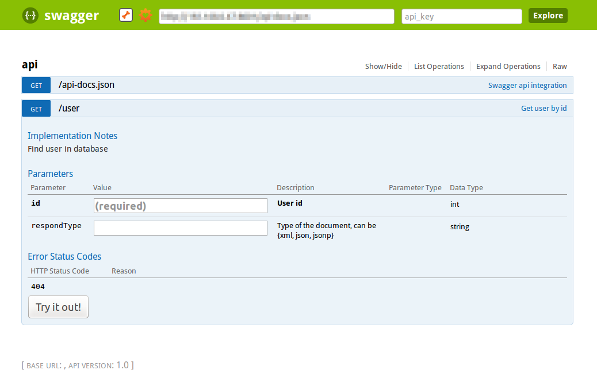

You can write RESTful APIs for iPhone, Android applications etc. very easily.
import xitrum.Action
import xitrum.annotation.GET
@GET("articles")
class ArticlesIndex extends Action {
def execute() {...}
}
@GET("articles/:id")
class ArticlesShow extends Action {
def execute() {...}
}
The same for POST, PUT, PATCH, DELETE, and OPTIONS. HEAD is automatically handled by Xitrum as GET.
For HTTP clients that do not support PUT and DELETE (like normal browsers), to simulate PUT and DELETE, send a POST with _method=put or _method=delete in the request body.
On web application startup, Xitrum will scan all those annotations, build the routing table and print it out for you so that you know what APIs your application has, like this:
[INFO] Routes:
GET /articles quickstart.action.ArticlesIndex
GET /articles/:id quickstart.action.ArticlesShow
Routes are automatically collected in the spirit of JAX-RS and Rails Engines. You don’t have to declare all routes in a single place. Think of this feature as distributed routes. You can plug an app into another app. If you have a blog engine, you can package it as a JAR file, then you can put that JAR file into another app and that app automatically has blog feature! Routing is also two-way: you can recreate URLs (reverse routing) in a typesafe way.
For better startup speed, routes are cached to file routes.cache. While developing, routes in .class files in the target directory are not cached. If you change library dependencies that contain routes, you may need to delete routes.cache. This file should not be committed to your project source code repository.
When you want to route like this:
/articles/:id --> ArticlesShow
/articles/new --> ArticlesNew
You must make sure the second route be checked first. First is for this purpose:
import xitrum.annotation.{GET, First}
@First
@GET("articles/:id")
class ArticlesShow extends Action {
def execute() {...}
}
@GET("articles/new")
class ArticlesNew extends Action {
def execute() {...}
}
Last is similar.
@GET("image", "image/:format")
class Image extends Action {
def execute() {
val format = paramo("format").getOrElse("png")
// ...
}
}
Regex can be used in routes to specify requirements:
def show = GET("/articles/:id<[0-9]+>") { ... }
For non-GET requests, Xitrum protects your web application from Cross-site request forgery by default.
When you include antiCSRFMeta in your layout:
import xitrum.Action
import xitrum.view.DocType
trait AppAction extends Action {
override def layout = DocType.html5(
<html>
<head>
{antiCSRFMeta}
{xitrumCSS}
{jsDefaults}
<title>Welcome to Xitrum</title>
</head>
<body>
{renderedView}
{jsForView}
</body>
</html>
)
}
The <head> part will include something like this:
<!DOCTYPE html>
<html>
<head>
...
<meta name="csrf-token" content="5402330e-9916-40d8-a3f4-16b271d583be" />
...
</head>
...
</html>
The token will be automatically included in all non-GET Ajax requests sent by jQuery.
If you manually write form in Scalate template, use antiCSRFInput:
form(method="post" action={url[AdminAddGroup]})
!= antiCSRFInput
label Group name *
input.required(type="text" name="name" placeholder="Required")
br
label Group description
input(type="text" name="desc")
br
input(type="submit" value="Add")
When you create APIs for machines, e.g. smartphones, you may want to skip this automatic CSRF check. Add the trait xitrum.SkipCsrfCheck to you action:
import xitrum.{Action, SkipCsrfCheck}
import xitrum.annotatin.POST
trait Api extends Action with SkipCsrfCheck
@POST("api/positions")
class LogPositionAPI extends Api {
def execute() {...}
}
@POST("api/todos")
class CreateTodoAPI extends Api {
def execute() {...}
}
To get the entire request body, use request.getContent. It returns ChannelBuffer, which has toString(Charset) method.
val body = request.getContent.toString(io.netty.util.CharsetUtil.UTF_8)
You can document your API with Swagger out of the box. Add @Swagger annotation on actions that need to be documented. Xitrum will generate /xitrum/swagger.json. This file can be used with Swagger UI to generate interactive API documentation.
Xitrum includes Swagger UI. Access it at the path /xitrum/swagger of your program.
Let’s see an example:
import xitrum.{Action, SkipCsrfCheck}
import xitrum.annotation.{GET, Swagger}
trait Api extends Action with SkipCsrfCheck
@GET("image/:width/:height")
@Swagger(
"Generate image",
Swagger.IntPath("width", "Image width, should not be bigger than 2000"),
Swagger.IntPath("height", "Image height, should not be bigger than 2000"),
Swagger.OptionalStringQuery("text", "Text to render on the image"),
Swagger.Response(200, "PNG image"),
Swagger.Response(400, "Width or height is invalid or too big")
)
class ImageApi extends Api {
def execute {
val width = param[Int]("width")
val height = param[Int]("height")
val text = paramo("text").getOrElse("Dummy text")
// ...
}
}
Read more about paramType and valueType.
/xitrum/swagger.json will look like this:
{
"basePath":"http://localhost:8000",
"swaggerVersion":"1.2",
"resourcePath":"/xitrum/swagger.json",
"apis":[{
"path":"/xitrum/swagger.json",
"operations":[{
"httpMethod":"GET",
"summary":"API doc",
"notes":"Use this route in Swagger UI to see the doc",
"nickname":"SwaggerAction",
"parameters":[],
"responseMessages":[]
}]
},{
"path":"/image/{width}",
"operations":[{
"httpMethod":"GET",
"summary":"Generate image",
"nickname":"ImageAPI",
"parameters":[{
"name":"width",
"paramType":"path",
"type":"integer",
"description":"Image width, should not be bigger than 2000",
"required":true
},{
"name":"height",
"paramType":"path",
"type":"integer",
"description":"Image height, should not be bigger than 2000",
"required":true
},{
"name":"text",
"paramType":"query",
"type":"string",
"description":"Text to render on the image",
"required":false
}],
"responseMessages":[{
"code":"200",
"message":"PNG image"
},{
"code":"400",
"message":"Width is invalid or too big"
}]
}]
}]
}
Swagger UI uses the above information to generate interactive API doc.
Params other than Swagger.IntPath and Swagger.OptionalStringQuery above: BytePath, IntQuery, OptionalStringForm etc. They are in the form:
Value type: Byte, Int, Int32, Int64, Long, Number, Float, Double, String, Boolean, Date DateTime
Param type: Path, Query, Body, Header, Form